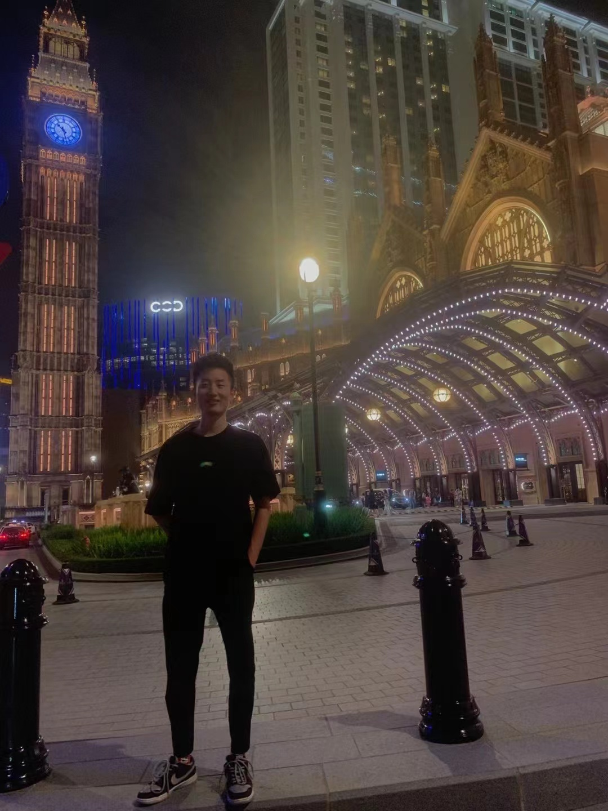

|  |
|
2022/11-current Geographic Information Desensitization for the Autonomous Driving Data
Project Description
Provide a set of software services to the autonomous driving company for compliance processing of vehicle data packets collected by the fleet in the cloud.
Work Content
2022/08-2022/11 Data Lake Data Management for the Autonomous Driving Industry
Project Description
Build a data lake technical scheme in the field of autonomous driving for customers and improve the scheme and Tencent cloud products during negotiation.
Work Content
2022/03-2022/07 Annotation Tool of Artificial Intelligence Algorithm Platform
Project Description
The self-developed comprehensive AI algorithm development platform of Tencent covers the labeling platform and algorithm development platform. The labeling platform mainly involves data set management, label management, project management, task management, homework, quality inspection management, autonomous labeling, etc.
Work Content
2021/08-2022/03Digital Marketing SaaS Products Based on Enterprise WeChat
Project Description
Tencent's self-developed SaaS platform for digital marketing of the automobile industry covers multi-tenant management, security center, application management, consumer operation tools, and other operation modules, as well as business management modules such as the data figures on the home page, analysis, CRM, marketing, materials, tools, merchants and system management.
Work Content
2019/9-2021/7: Master of Science, Autonomous Systems, Technical University of Denmark, GPA 3.55/4.0
2015/09-2019/06: Bachelor of Engineering, Shijiazhuang Tiedao University, GPA 3.69/4, ranked 1 out of 27 in my class.
Robust classification of fish species during demersal trawling
2021/02-2021/07: Project Owner of MSc. Thesis, advised by Prof. Roberto Galaezzi, Technical University of Denmark
Whisker sensor for autonomous robot
2020/01-2020/02: Project Owner of Speical Course, advised by Prof. Jens Christian Andersen, Technical University of Denmark